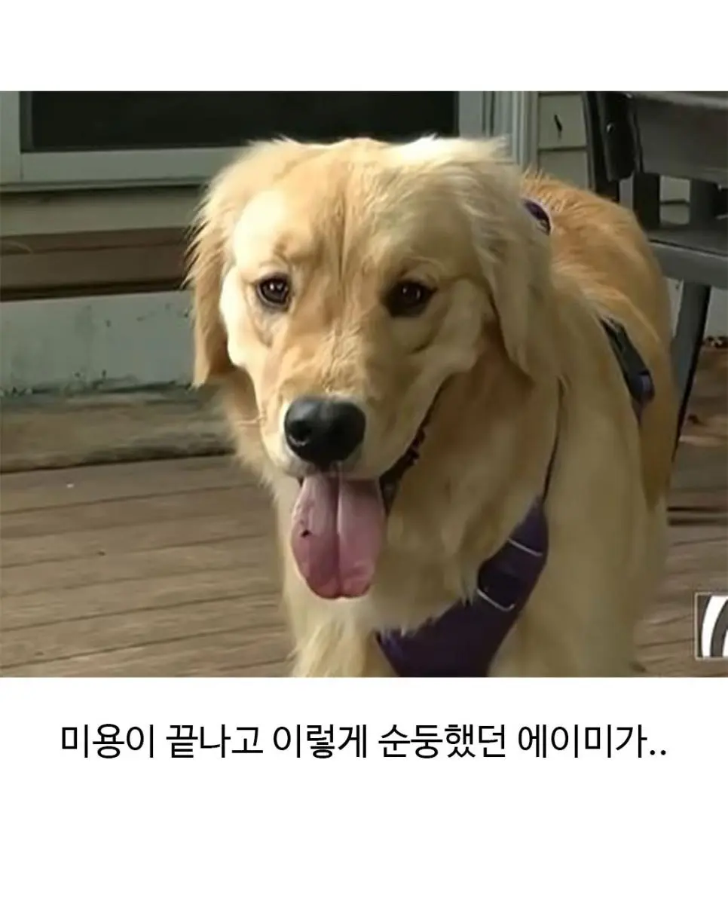
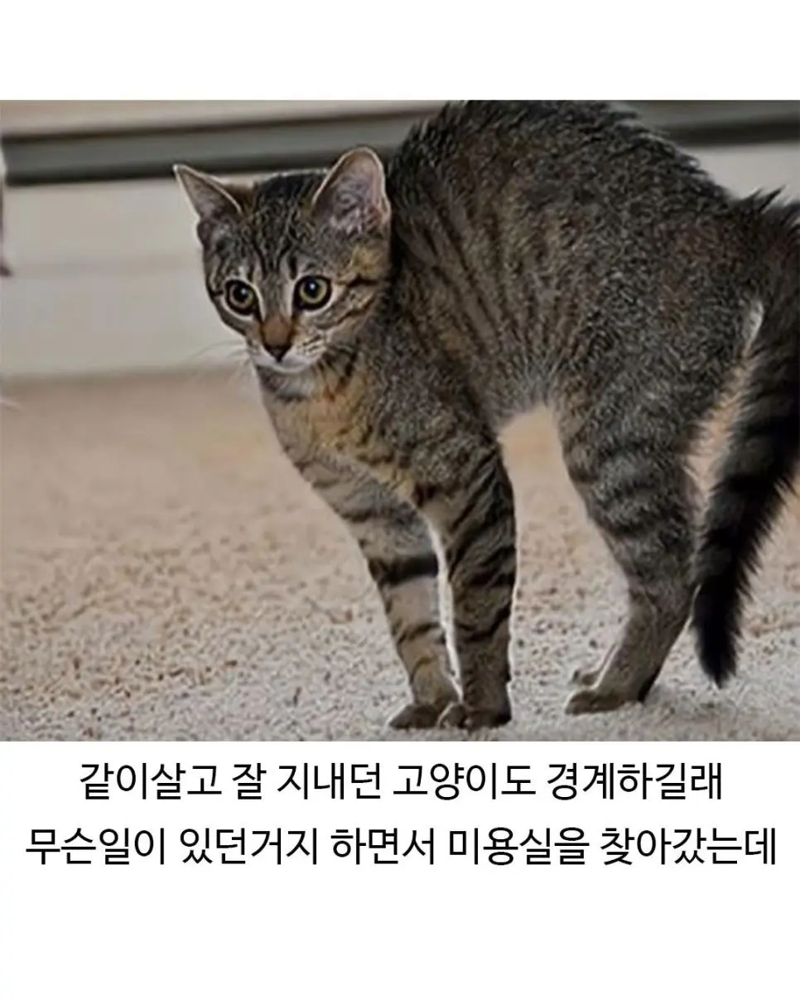
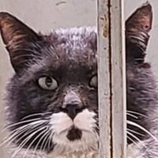

86 · 8 · 5 시간 전 · 원문


일단 따라간 메디 ㅎㅎ
수집 당시 댓글 8개
토마토케첩 · 10 시간 전
아씨 누구지 일단 알겠습니다
콩냉이순장고 · 4 시간 전
야옹쓰 표정 개웃기네ㅋㅋㅋㅋ
리다실 · 4 시간 전
야옹이 표정봐 ㅅㅂㅋㅋ
익사한넙치 · 4 시간 전
(불편)
천둥벌거숭이 · 3 시간 전
고양이는 얘가 아닌걸 알아보는데 인간은 못알아봐 ㅋㅋㅋㅋ
카아르답 · 2 시간 전
한번 가보입시다
hazelnut · 2 시간 전

파카사탕 · 42 분 전
이 사람들이 절 막 만졌어요!
아씨 누구지 일단 알겠습니다